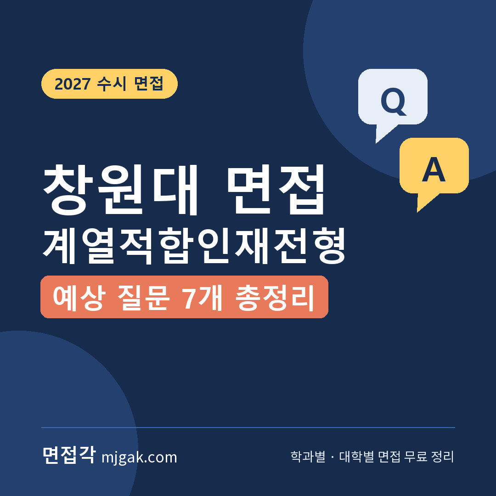
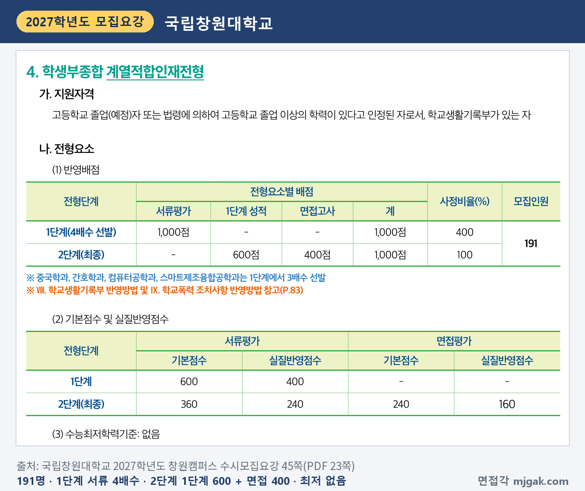
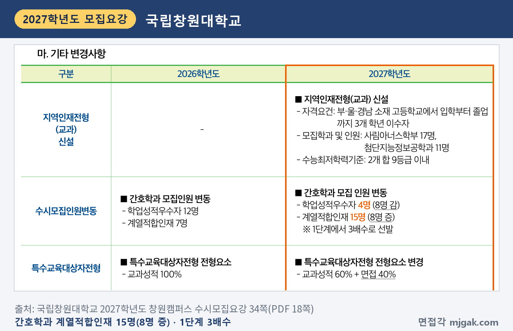
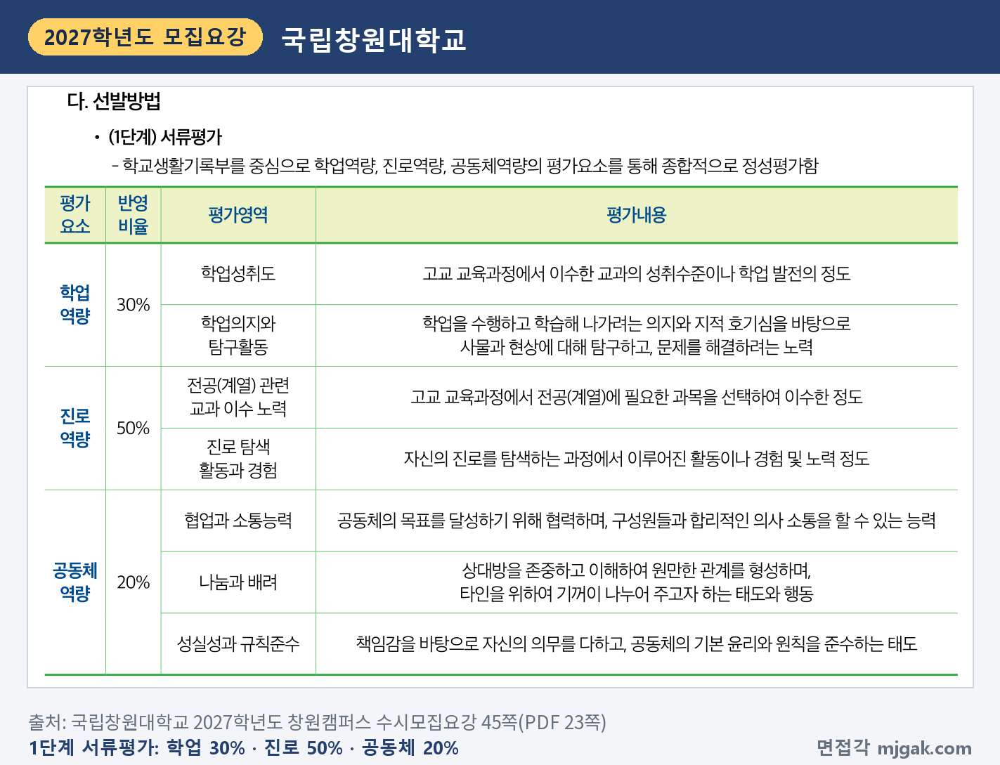
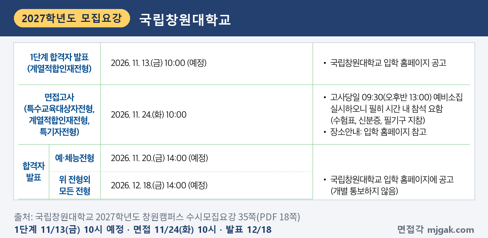
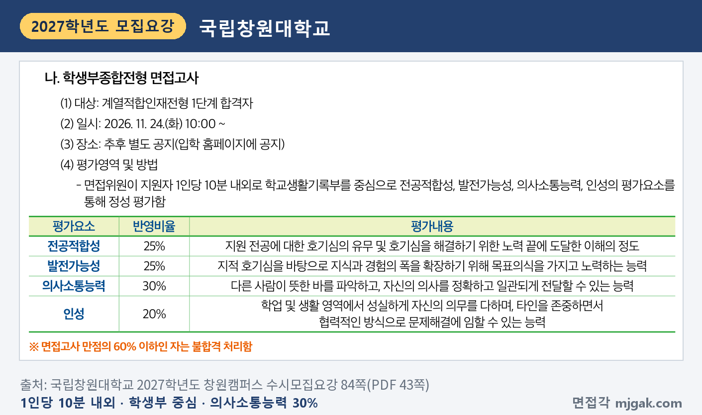
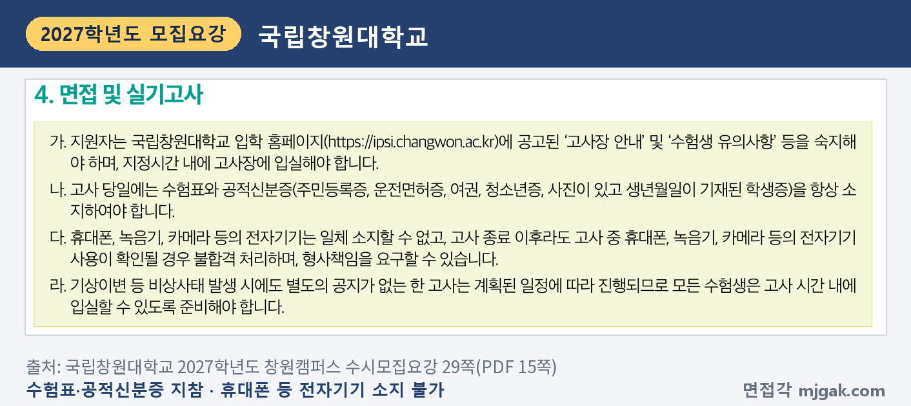
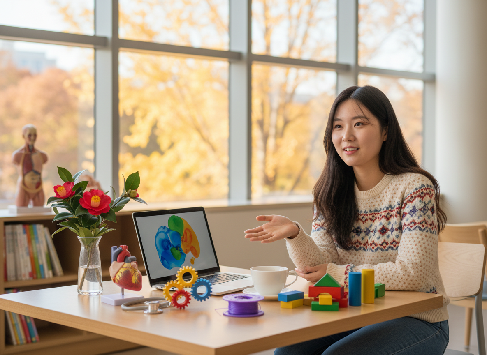
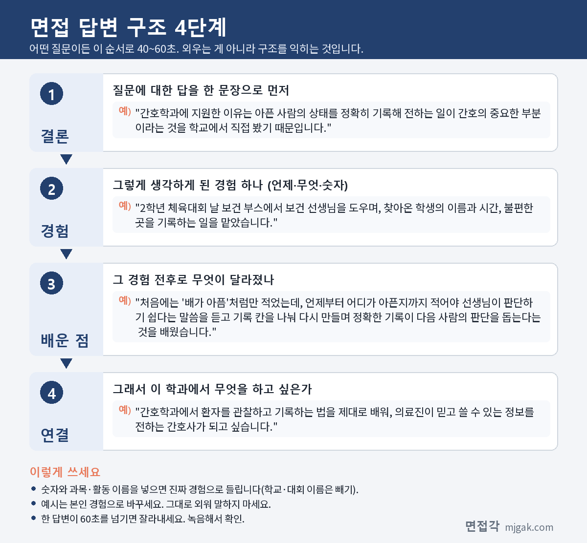
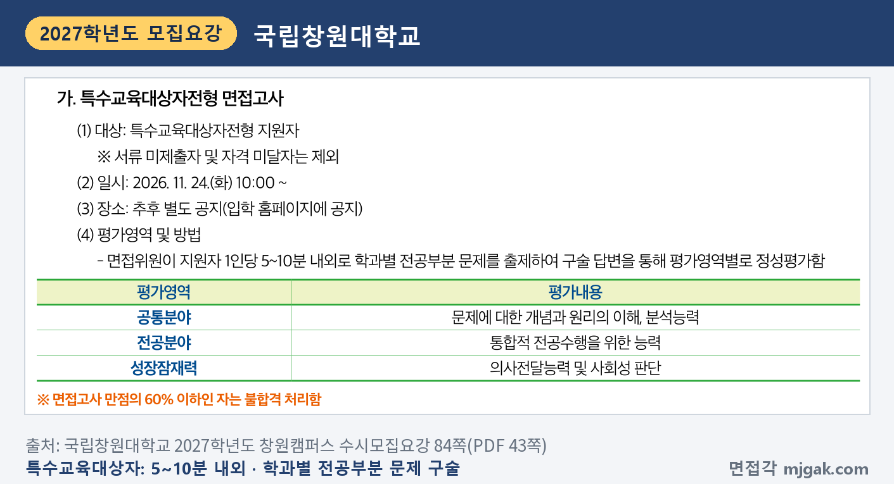

Ctrl+V (서식 유지됨)제목
본문 (이 영역 전체가 복사됩니다)
📷 여기에 이미지 넣기 — 썸네일 — thumb-changwon.png (대표 이미지로 지정)
국립창원대 계열적합인재전형에서 먼저 챙길 것은 순서입니다. 1단계 합격자 발표가 수능보다 앞선 11월 13일(금) 10:00 예정이고, 면접은 수능 닷새 뒤인 11월 24일(화)입니다. 그래서 면접 준비를 수능 공부와 나눠서 해야 합니다. 2단계는 1단계 성적 600점과 면접 400점을 합산하고, 면접은 1인당 10분 내외로 학교생활기록부를 중심으로 봅니다. 면접고사 만점의 60% 이하이면 불합격입니다. 이 글은 「2027학년도 국립창원대학교 창원캠퍼스 수시모집요강」으로 전형 방법, 일정, 면접 방식, 예상 질문 7개, 준비 순서를 정리했습니다. 같은 날 면접을 보는 특수교육대상자전형·특기자전형은 뒤에 한 구역으로 묶었습니다. 계열적합인재전형 지원자와 국립창원대 면접 전형 지원자가 읽으시면 됩니다.
1. 계열적합인재전형, 2027학년도에는 어떻게 보나
학생부종합 계열적합인재전형은 191명을 뽑고, 수능최저학력기준은 없습니다(45쪽). 인원이 많은 모집단위는 간호학과 15명, 중국학과 10명, 컴퓨터공학과 9명, 스마트제조융합공학과 8명이고, 일어일문학과·철학과·유아교육과·법학과·행정학과·국제관계학과·글로벌비즈니스학부·국제무역학과가 각 7명입니다(36·37쪽). 이 전형으로 뽑지 않는 학과도 있으니 36·37쪽 표에서 내 학과 칸을 먼저 확인하세요.
1단계는 서류평가 100%(1,000점)로 모집인원의 4배수를 뽑고, 중국학과·간호학과·컴퓨터공학과·스마트제조융합공학과는 3배수를 뽑습니다. 2단계는 1단계 성적 600점과 면접고사 400점을 합산합니다(45쪽). 이 글에서 계산하면 1단계 합격 규모는 간호학과 45명, 중국학과 30명, 컴퓨터공학과 27명, 7명을 뽑는 학과는 28명입니다.
📷 여기에 이미지 넣기 — 캡처 1 — 국립창원대학교 2027학년도 창원캠퍼스 수시모집요강 45쪽: changwon-2027-method.png
간호학과는 계열적합인재 인원이 2026학년도 7명에서 15명으로 8명 늘었습니다(34쪽).
📷 여기에 이미지 넣기 — 캡처 2 — 국립창원대학교 2027학년도 창원캠퍼스 수시모집요강 34쪽: changwon-2027-changes.png
1단계 서류평가는 학교생활기록부를 중심으로 학업역량 30%, 진로역량 50%, 공동체역량 20%를 종합적으로 정성평가합니다(45쪽). 최종 동점자는 면접평가 점수, 학교생활기록부평가(총점), 서류평가의 학업역량 점수 순으로 가리고, 그래도 같으면 전원 선발합니다(46쪽). 학교폭력 조치사항은 2단계 총점에서 4·5호 30점, 6·7호 50점, 8·9호 100점을 감점합니다(83쪽).
📷 여기에 이미지 넣기 — 캡처 3 — 국립창원대학교 2027학년도 창원캠퍼스 수시모집요강 45쪽: changwon-2027-docs.png
2. 언제 보나: 수능 전 1단계 발표, 수능 뒤 면접
- 2026년 9월 7일(월)~11일(금): 원서접수
- 11월 13일(금) 10:00 예정: 1단계 합격자 발표, 입학 홈페이지 공고
- 11월 19일(목): 수능
- 11월 24일(화) 10:00: 면접, 09:30(오후반 13:00) 예비소집
- 12월 18일(금) 14:00 예정: 합격자 발표(개별 통보하지 않음)
1단계 발표에서 면접까지 11일이고, 그 사이에 수능이 있습니다(이 글에서 계산한 값). 예비소집에는 필히 시간 내 참석해야 하고 수험표, 신분증, 필기구를 지참합니다. 장소는 입학 홈페이지에서 안내합니다(35쪽).
📷 여기에 이미지 넣기 — 캡처 4 — 국립창원대학교 2027학년도 창원캠퍼스 수시모집요강 35쪽: changwon-2027-schedule.png
3. 면접은 어떻게 보나
면접위원이 지원자 1인당 10분 내외로 학교생활기록부를 중심으로 정성 평가합니다. 평가요소는 네 가지입니다(84쪽).
- 전공적합성 25%: 지원 전공에 대한 호기심의 유무 및 호기심을 해결하기 위한 노력 끝에 도달한 이해의 정도
- 발전가능성 25%: 지적 호기심을 바탕으로 지식과 경험의 폭을 확장하기 위해 목표의식을 가지고 노력하는 능력
- 의사소통능력 30%: 다른 사람이 뜻한 바를 파악하고, 자신의 의사를 정확하고 일관되게 전달할 수 있는 능력
- 인성 20%: 학업 및 생활 영역에서 성실하게 자신의 의무를 다하며, 타인을 존중하면서 협력적인 방식으로 문제해결에 임할 수 있는 능력
면접고사 만점의 60% 이하이면 다른 점수와 관계없이 불합격입니다(84쪽).
📷 여기에 이미지 넣기 — 캡처 5 — 국립창원대학교 2027학년도 창원캠퍼스 수시모집요강 84쪽: changwon-2027-interview.png
고사 당일에는 수험표와 공적신분증(주민등록증, 운전면허증, 여권, 청소년증, 사진이 있고 생년월일이 기재된 학생증)을 지니고, 휴대폰·녹음기·카메라 등 전자기기는 일체 소지할 수 없습니다. 면접에 결시하면 불합격입니다(29쪽). 블라인드 면접이나 복장 규정은 모집요강에 따로 적혀 있지 않습니다.
📷 여기에 이미지 넣기 — 캡처 6 — 국립창원대학교 2027학년도 창원캠퍼스 수시모집요강 29쪽: changwon-2027-rules.png
4. 평가요소에서 나올 예상 질문 7개와 답변법
국립창원대는 모집요강에 면접 질문 예시를 공개하지 않았습니다. 아래 7개는 평가요소 네 가지와 "학교생활기록부를 중심으로"라는 방식으로 정리한 예상 질문입니다. 평가요소마다 1~2개씩 넣었고, 반영비율이 가장 큰 의사소통능력(30%)은 두 개를 넣었습니다. 예시 답변은 모집단위를 바꿔 쓴 가상의 예시이니 본인 경험으로 바꾸세요.
▶ 질문 1. 간호학과에 지원한 이유를 학생부 활동과 연결해 말해 보세요. (전공적합성)
왜 묻나: '지원 전공에 대한 호기심의 유무'와 연결한 질문입니다. 관심이 생긴 학교생활 장면이 있어야 합니다.
답변 구조: 지원 이유 한 문장 → 관심을 확인한 장면 → 그때 바꾼 것과 배운 점 → 학과에서 배울 것.
답변 예시 (간호학과):
"간호학과에 지원한 이유는 아픈 사람의 상태를 정확히 기록해 전하는 일이 간호의 중요한 부분이라는 것을 학교에서 직접 봤기 때문입니다. 2학년 체육대회 날 보건 부스에서 보건 선생님을 도우며, 찾아온 학생의 이름과 시간, 불편한 곳을 기록하는 일을 맡았습니다. 처음에는 '배가 아픔'처럼만 적었는데, 언제부터 어디가 아픈지까지 적어야 선생님이 판단하기 쉽다는 말씀을 듣고 기록 칸을 나눠 다시 만들며 정확한 기록이 다음 사람의 판단을 돕는다는 것을 배웠습니다. 간호학과에서 환자를 관찰하고 기록하는 법을 제대로 배워, 의료진이 믿고 쓸 수 있는 정보를 전하는 간호사가 되고 싶습니다."
주의: 처치는 선생님이 하고 나는 기록을 도왔다는 것처럼, 내가 한 일의 범위를 정확히 말하세요.
▶ 질문 2. 전공과 관련해 궁금했던 것을 어떻게 해결했나요? (전공적합성)
왜 묻나: '호기심을 해결하기 위한 노력 끝에 도달한 이해의 정도'를 그대로 질문으로 바꾼 것입니다. 궁금증, 찾아본 방법, 알게 된 것이 이어져야 합니다.
답변 구조: 궁금했던 것 → 해 본 방법 → 알게 된 것 → 더 공부하고 싶은 것.
답변 예시 (컴퓨터공학과):
"정보 시간에 선택 정렬을 배우고, 데이터가 많아지면 왜 그렇게 느려지는지 궁금했습니다. 정렬할 숫자를 1,000개에서 10,000개로 늘려 실행 시간을 재 보니 10배보다 훨씬 크게 늘었습니다. 책을 찾아보니 선택 정렬은 비교 횟수가 데이터 수의 제곱에 비례해 늘어난다는 것을 알았고, 병합 정렬로 바꾸자 시간이 훨씬 덜 늘었습니다. 같은 결과를 내는 코드도 방법에 따라 효율이 다르다는 것을 알았고, 자료구조와 알고리즘을 제대로 배우고 싶습니다."
주의: 개념 설명은 한 문장으로 줄이고, 내가 직접 해 본 일에 시간을 쓰세요.
▶ 질문 3. 학생부의 ○○ 활동에서 본인이 직접 한 일은 무엇인가요? (학생부 기반, 발전가능성)
왜 묻나: 학교생활기록부를 중심으로 보는 면접이라, 적힌 활동을 짚어 묻는 형태를 예상할 수 있습니다.
답변 구조: 활동 주제 → 내가 맡은 일 → 막힌 점과 해결 → 결과와 다음 목표.
답변 예시 (중국학과):
"중국어Ⅰ 수업에서 모둠별로 우리 지역 관광 안내문을 중국어로 만들었고, 저는 번역을 맡았습니다. 번역기 결과를 그대로 옮기자 중국어 선생님께서 뜻은 통해도 안내문에 쓰지 않는 표현이라고 하셨습니다. 그래서 중국 관광지 안내문 표현을 찾아 비슷한 문장 틀로 다시 썼습니다. 언어는 단어보다 쓰이는 상황을 알아야 한다는 것을 배웠고, 중국 사회와 문화를 함께 공부하고 싶어졌습니다."
주의: "저희 모둠은"으로 시작하면 내 역할이 흐려집니다. "저는 ○○을 맡았습니다"로 시작하세요.
📷 여기에 이미지 넣기 — 이미지 1 — 제미나이 생성: 붉은 동백꽃 가지가 놓인 늦가을 캠퍼스 라운지에서 청진기·심장 모형·노트북·3D 프린터 출력물 옆에서 답하는 여학생(실사) / "제미나이 프롬프트 1" · gem-changwon-1.png
(AI로 만든 이미지로, 실제 캠퍼스와 다를 수 있습니다)
▶ 질문 4. 목표를 정하고 공부나 경험의 폭을 넓힌 적이 있나요? (발전가능성)
왜 묻나: '목표의식을 가지고 노력하는 능력'과 연결한 질문입니다. 목표, 한 일, 넓어진 범위를 말해야 합니다.
답변 구조: 목표 한 문장 → 한 일 → 결과 → 다음으로 넓힌 공부.
답변 예시 (스마트제조융합공학과):
"메이커 동아리에서 3D 프린터 출력 실패를 절반으로 줄이는 것을 목표로 정했습니다. 실패할 때마다 바닥판 온도, 첫 층 속도, 결과를 표로 적었고, 첫 층 속도를 낮추자 첫 층이 바닥판에 붙지 않는 실패가 크게 줄었습니다. 기록이 쌓이자 기계를 고치는 것보다 조건을 관리하는 일이 중요하다는 것을 알았습니다. 그래서 공장에서 센서 데이터로 불량을 줄이는 방법을 찾아 읽기 시작했습니다."
주의: 결과 숫자가 크지 않아도 됩니다. 목표와 기록, 다음 행동이 이어지면 됩니다.
▶ 질문 5. 친구와 의견이 달랐을 때 상대의 뜻을 어떻게 파악했나요? (의사소통능력)
왜 묻나: '다른 사람이 뜻한 바를 파악'하는 능력과 연결한 질문입니다. 상대 말을 어떻게 확인했는지가 들어가야 합니다.
답변 구조: 상황과 갈린 의견 → 상대 뜻을 확인한 방법 → 정한 결론 → 바뀐 습관.
답변 예시 (행정학과):
"학급 자치회에서 쉬는 시간 교실 음악을 두고 '틀자'와 '끄자'로 의견이 갈렸습니다. 저는 반대하는 친구들에게 이유를 다시 물었고, 음악 자체보다 소리가 커서 공부에 방해된다는 뜻이라는 것을 알았습니다. 그래서 점심시간에만 작은 소리로 틀자고 제안해 모두 동의했습니다. 겉으로 나온 말보다 그 뒤의 이유를 확인하는 습관이 생겼습니다."
주의: 내가 이긴 이야기가 아니라, 상대 뜻을 어떻게 확인했는지를 넣으세요.
▶ 질문 6. 방금 "아이 눈높이에 맞췄다"고 했는데, 구체적으로 어떻게 했나요? (의사소통능력)
왜 묻나: 10분 내외 면접에서는 앞 답의 한 단어를 짚어 다시 묻는 질문도 예상할 수 있습니다. '정확하고 일관되게 전달'하는지와 연결됩니다.
답변 구조: 묻는 것에 대한 답 한 문장 → 구체적 장면 → 결과 → 앞 답과 이어 말하기.
답변 예시 (유아교육과):
"눈높이를 맞췄다는 것은 질문을 짧고 고를 수 있게 바꿨다는 뜻입니다. 지역아동센터에서 그림책을 읽어 줄 때 '어떤 느낌이었어?'라고 물으면 아이들이 대답을 못 했습니다. '토끼가 웃었을까, 울었을까?'처럼 둘 중 하나를 고르게 묻자 손을 드는 아이가 많아졌습니다. 그래서 앞에서 말씀드린 대로 유아교육과에서 아이 발달에 맞는 대화법을 배우고 싶습니다."
주의: 질문이 잘 이해되지 않으면 "○○을 여쭤보신 것이 맞을까요?"라고 확인해도 됩니다.
▶ 질문 7. 맡은 일을 끝까지 책임진 경험이 있나요? (인성)
왜 묻나: '성실하게 자신의 의무를 다하며, 타인을 존중하면서 협력적인 방식으로 문제해결'과 연결한 질문입니다.
답변 구조: 맡은 일 → 어려웠던 점 → 상대를 존중하며 바꾼 방법 → 결과와 배운 점.
답변 예시 (법학과):
"도서부에서 연체 도서 관리를 1년 동안 맡았습니다. 처음에는 연체한 친구 이름을 게시판에 붙였는데, 창피하다는 항의가 있어 규칙보다 사람이 먼저 다칠 수 있다는 것을 알았습니다. 그래서 개인 메시지로 반납일을 알리고 반납 상자를 교실 앞에 두는 방식으로 바꿨고, 학기 말 연체 도서가 눈에 띄게 줄었습니다. 규칙을 지키게 하는 방법도 상대를 존중해야 효과가 있다는 것을 배웠습니다."
주의: 혼자 다 했다는 이야기보다, 함께 바꾼 과정을 넣으세요.
5. 답변은 이 4단계로 만드세요
어떤 질문이든 결론 → 경험 → 배운 점 → 연결 순서로 40~60초 안에 말하세요. 면접이 10분 내외이니 답 하나가 1분을 넘지 않게 연습합니다. 아래 도식은 질문 1을 4단계로 쪼갠 것입니다.
📷 여기에 이미지 넣기 — 도식 — structure-changwon.png
6. 특수교육대상자전형·특기자전형도 같은 날 면접입니다
정원 외 특수교육대상자전형은 13명을 뽑고, 2027학년도부터 교과성적 100%에서 학생부 600점(60%)과 면접 400점(40%)으로 바뀌었습니다. 수능 최저는 없습니다(31·34·73쪽). 장애 학생에게 도우미 지원과 입학편의를 제공하지만, 장애학생 도우미 신청자가 없으면 미배정될 수 있습니다. 문의는 장애학생지원센터(055-213-2064)입니다(73쪽).
특기자전형은 체육학과 10명, 무용학과 7명을 뽑고 학생부 30%, 특기실적 50%, 면접 20%를 반영합니다(31쪽).
두 전형 면접은 모두 11월 24일(화) 10:00부터입니다. 면접위원이 1인당 5~10분 내외로 학과별 전공부분 문제를 출제하고 구술 답변으로 평가합니다. 평가영역은 공통분야(문제에 대한 개념과 원리의 이해, 분석능력), 전공분야(통합적 전공수행을 위한 능력), 성장잠재력(의사전달능력 및 사회성 판단)이고, 만점의 60% 이하이면 불합격입니다(84쪽). 지원 학과의 기초 개념을 1분 안에 말로 설명하는 연습을 하세요.
📷 여기에 이미지 넣기 — 캡처 7 — 국립창원대학교 2027학년도 창원캠퍼스 수시모집요강 84쪽: changwon-2027-special.png
7. 10월 31일(토)부터 면접 당일까지 준비 순서
10월 31일(토) ~ 11월 12일(목): 학생부를 처음부터 읽고 수업 장면 두 개, 활동 세 개를 골라 "왜 시작했나, 내가 한 일, 막힌 점, 다음에 한 일"을 한 줄씩 적습니다. 질문 1·2 초안을 만듭니다.
11월 13일(금) 10:00 예정, 1단계 발표: 입학 홈페이지에서 직접 확인합니다(35쪽).
11월 14일(토) ~ 18일(수): 수능 공부가 먼저입니다. 하루 10분만 질문 1·3을 소리 내어 말합니다.
11월 19일(목): 수능.
11월 20일(금) ~ 22일(일): 질문 3~7을 다른 활동으로도 답해 봅니다. 10분을 재며 모의 면접을 녹음하고, 60초를 넘는 답을 표시합니다.
11월 23일(월): 입학 홈페이지에서 고사장 안내와 수험생 유의사항을 확인합니다(29쪽). 표시한 답을 줄이고 새 답변은 만들지 않습니다.
11월 24일(화), 면접: 09:30(오후반 13:00) 예비소집에 맞춰 수험표, 신분증, 필기구를 챙깁니다(35쪽).
12월 18일(금) 14:00 예정: 합격자 발표. 합격했다면 12월 21일(월) 10:00 ~ 23일(수) 18:00 온라인 문서등록을 놓치지 마세요(35쪽).
8. 국립창원대 계열적합인재 면접 자주 묻는 것들
Q. 수능 최저가 있나요?
A. 없습니다(45쪽). 대신 면접고사 만점의 60% 이하이면 불합격입니다(84쪽).
Q. 다른 전형에도 같이 지원할 수 있나요?
A. 수시 6개 전형 이내(거창·남해캠퍼스, 다른 대학 지원 포함)에서 지원할 수 있고, 한 전형에는 1개 모집단위만 지원할 수 있습니다. 다른 전형이라면 같은 모집단위에도 지원할 수 있습니다(28쪽).
Q. 제시문을 읽고 푸는 문제가 나오나요?
A. 계열적합인재전형은 학교생활기록부를 중심으로 평가하고, 제시문 안내는 없습니다(84쪽). 학과별 전공부분 문제는 특수교육대상자·특기자전형 면접 방식입니다(84쪽).
Q. 면접 복장은 어떻게 하나요?
A. 모집요강에 복장 규정은 따로 적혀 있지 않습니다. 지참물은 수험표, 신분증, 필기구입니다(35쪽).
Q. 휴대폰을 가지고 가도 되나요?
A. 전자기기는 일체 소지할 수 없고, 고사 중 사용이 확인되면 불합격 처리합니다(29쪽).
9. 면접 전날 체크리스트
□ 지원 이유를 학생부 장면 하나와 함께 60초 안에 말할 수 있다
□ 전공과 관련해 궁금했던 것과 해결한 과정을 말할 수 있다
□ 학생부 활동 세 개를 "내가 한 일, 막힌 점, 다음에 한 일"로 말할 수 있다
□ 의견이 달랐을 때 상대 뜻을 확인한 경험을 말할 수 있다
□ 녹음으로 60초를 넘는 답을 줄였다
□ 입학 홈페이지에서 면접 장소와 예비소집 시간을 확인했다
□ 수험표, 신분증, 필기구를 챙겼고 전자기기는 두고 간다
10. 같은 시기에 면접 보는 대학
국립창원대와 같이 지원했다면 이어서 보세요.
▷ 경상국립대 학생부종합 일반전형(면접) 총정리 (11월 25일·26일)
▷ 강원대 미래인재면접전형 면접 총정리 (11월 27일)
11. 함께 보면 좋은 글
계열적합인재전형 면접은 10분 내외에 학생부에 적힌 수업과 활동을 내 말로 설명하고, 그 호기심이 지원한 전공으로 어떻게 이어지는지 보여 주는 자리입니다.
※ 이 글의 내용은 「2027학년도 국립창원대학교 창원캠퍼스 수시모집요강」에서 인용했습니다. 괄호 안 쪽수는 모집요강에 인쇄된 쪽수입니다. 예상 질문은 모집요강의 평가요소를 바탕으로 정리한 것이며 대학이 공개한 질문이 아닙니다. 면접 장소와 예비소집 시간은 국립창원대 입학 홈페이지 안내를 꼭 확인하세요.
국립창원대를 포함한 76개 대학의 2027학년도 면접 정보와 71개 학과별 면접 질문·답변 예시, 대학이 공개한 실제 면접 기출을 무료로 정리한 사이트입니다. 회원가입 없이 바로 볼 수 있고, 질문을 무작위로 뽑아 60초 타이머로 연습하는 모의 면접도 있습니다.
태그 (#은 에디터가 자동으로 붙이므로 그대로 붙여 넣어도 됩니다)
넣을 이미지 목록 (docs/promo/img 폴더)










제미나이 프롬프트 1 — 붉은 동백꽃 가지가 놓인 늦가을 캠퍼스 라운지에서 청진기·심장 모형·노트북·3D 프린터 출력물 옆에서 답하는 여학생(실사) (4:3) — 제미나이에 그대로 붙여 넣어 이미지를 만드세요